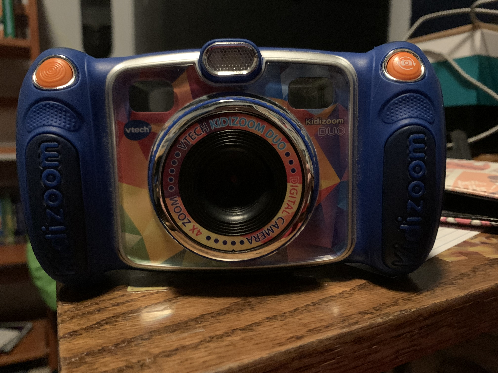

I own a VTech Kidizoom Duo Camera. I have had it for a while now. I made a series called The Twilight Zone: Not Really one, but different.
I was probably 5 years old when it wass first made and by the last one (Twilight Zone 3 part 3), I was probably 10.
I also made a bunch of other vids of it, but they were taking up too much space on the camera (there is like 100MB on it).
It also doesn't have a zoom lens, so you are better off not zooming in. It requires 4 AA batteries to work.
It also has a USB micro port and a Micro SD card slot for more storage. When you turn it on, there are 6 apps on the camera.
The first one is the camera app that automatically starts. It has poor quality video shown on it. The camera actually kinda looks like the 3DS.
If you rotate the wheel around the lens, there are unique effects. There are also unique effects if you move the joystick left or right.
You can move quickly to these effects by pressing the star button on the right. Up on the joystick is the flash and down is the timer.
The next app on the menu is You & Me Camera. It's like camera but it has a bunch of photo frames (i don't know what else to call them)
and you are supposed to take one big picture with your friends basically. The one after is Movies. It's like the camera app but you take
videos and there are new filters. The one next is Voice Recorder. You record audio clips and you have audio effects as well.
The next one is Wacky Photo Shaker. It finds your pictures and you have to shake the camera to put a wacky filter on. Then we have creative tools.
The first tool is photo editor. It's an app where you put effects on the photos you have. Next there is face library. You take a picture of your face
and it puts it on one of the handful of presets it has. The last one is Silly Face Detector. It detects if your face is silly and shows the percentage
of silliness. The facial detection is not great. Then there is games. The games to choose are Busy Traffic, a game where you avoid cars and oil spills and collect gas,
Save the fish, a game where you are a fish and navagate throughout a sewage system in order to go to the ocean I belive, Basketball Fun,
a game where you have to throw the right colored basketball in the right hoop, Crazy Cafe, aa game where you have to get the right ingredients for food that falls from
the ceiling, apparently, and Bounce around, a breakout clone. The last homepage app is Settings. You have Set wallpaper, Memory which you can check your storage and handle it,
Camera Settings, where you change the front camera resolution, the Indoor Light Frequency, a Photo Optimizer and a self timer, Date & Time andparental control.
For the parental controls, you have to hold the star for 3 seconds, solve a basic multiplication problem and limit the games. If you disable games entirely, games becomes
the face library. There are also holes cut out above the screen and buttons that have plastic in them for seeing what your taking without using the screen.
If you press the play button, it shows your photo library. there is also a home button for going home and an OK button for confirmation. There's also a volume button
and an X button, like the OK button, for confirmation. In the front, there is a flash, a switch cameras button and a shutter button. That is the whole thing.
